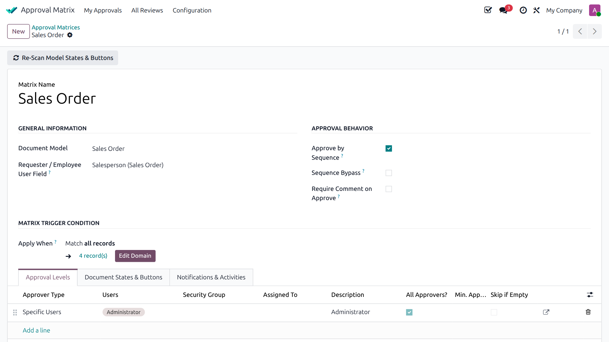
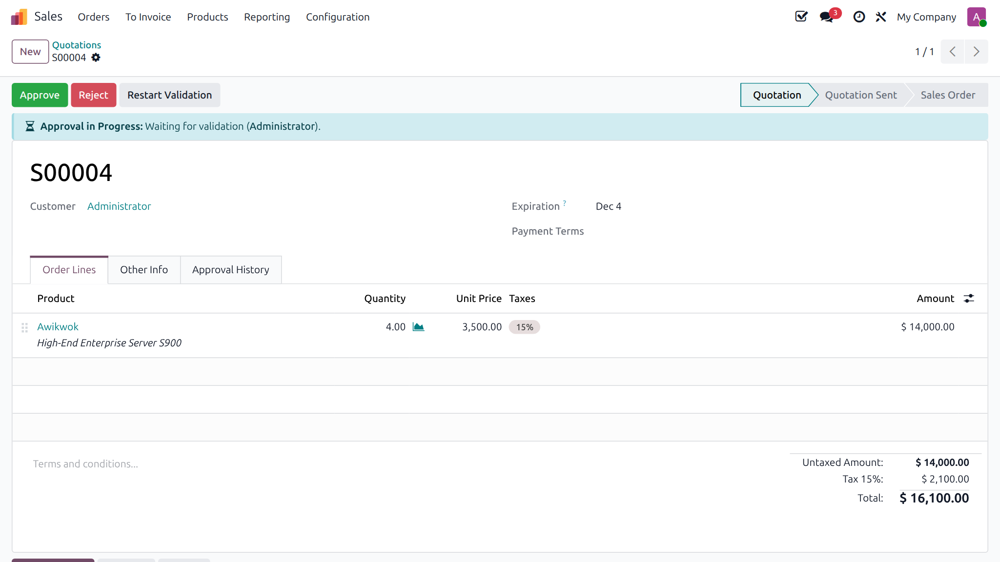
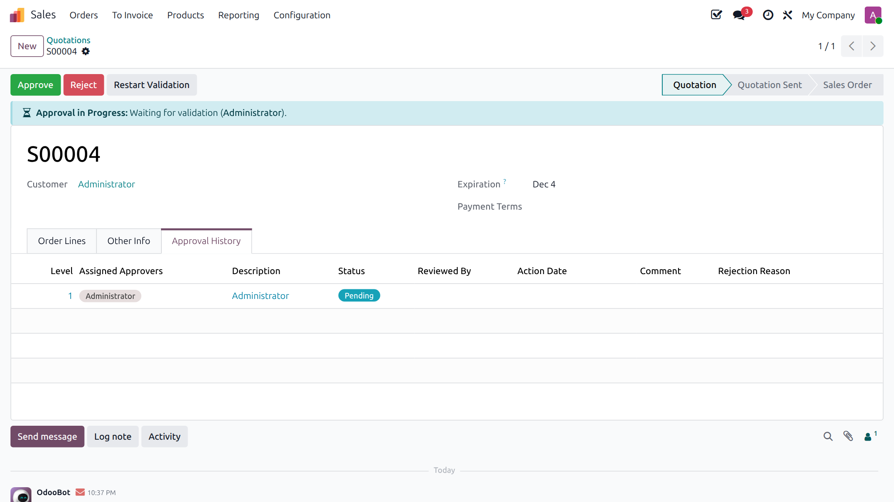
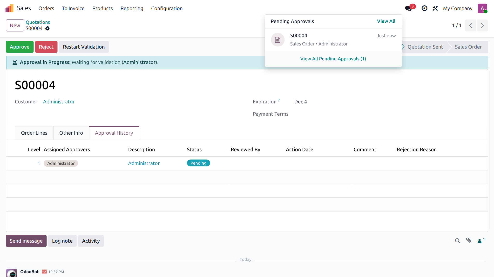
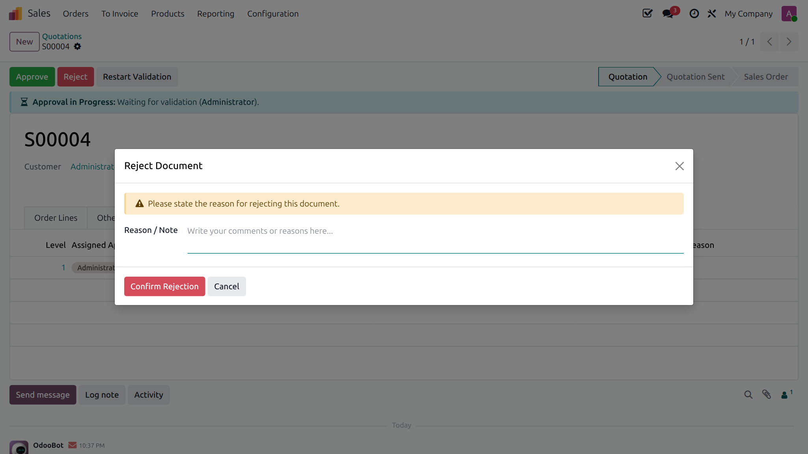
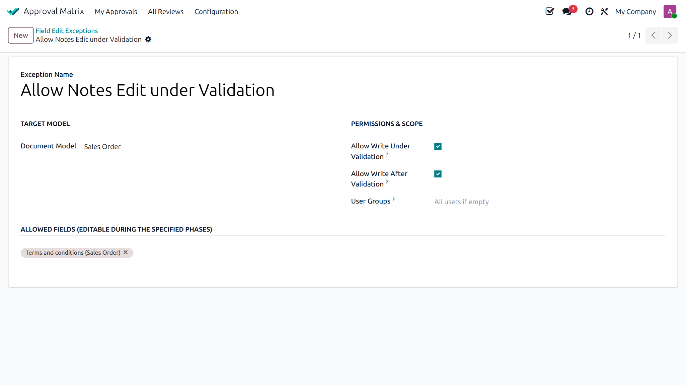

Enterprise-grade, flexible, and universal multi-tier approval matrix engine. Automate document workflows, enforce delegation of authority, and prevent unapproved operational actions across any Odoo model.
Designed from the ground up for seamless compatibility, zero core patching, and high performance.
Attach multi-tier approvals to any document model (Purchase Orders, Sales, Inventory, Invoices, or custom addons) using standard Odoo model hooks.
Define dynamic approval lines based on department hierarchy, managerial roles, specific users, or authorization groups with minimum threshold amounts.
Real-time OWL navbar notification badge. Approvers instantly see pending documents waiting for their action and can open them with a single click.
Enforce read-only locks on sensitive fields during approval cycles to prevent silent alterations, while allowing authorized exceptions where needed.
Requires approvers to provide mandatory reasoning/comments on rejection, automatically logging chatter notifications and updating review statuses.
Maintains permanent timestamps, user IDs, comments, and decision states for every tier, ensuring full compliance and regulatory readiness.
See how the module manages approval workflows in practice.
Configure dynamic rules per document type, department, and company. Set minimum amount limits, define sequence steps, and specify authorized groups or direct approvers.

When a document requires approval, the system introduces a dedicated approval status ribbon and dedicated action buttons (Request Approval, Approve, Reject).

A dedicated "Approval Matrix" page on the document shows real-time progress across all tiers. Everyone can clearly see who has approved and who is currently pending.

Approvers don't need to manually hunt through menu items. The OWL systray indicator shows the total pending count across all document types.

Reviewers execute decisions through a dedicated popup dialog that requires explanatory notes for rejections, preventing uncommunicated document holds.

Configure specific field exceptions that remain editable even while a record is under approval, preventing rigid workflow lockups.
